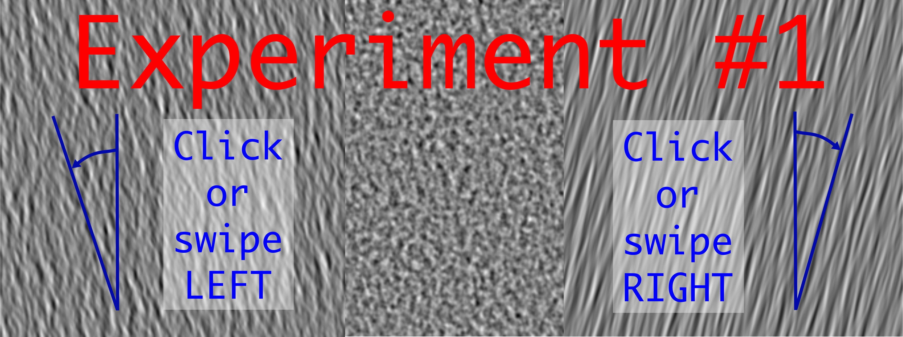

OEiL: Orientation Experiment in Liberty
This experiment consists in a series of trials where you will have to judge the average orientation of a textured image.
Your browser does not support the video tag.
